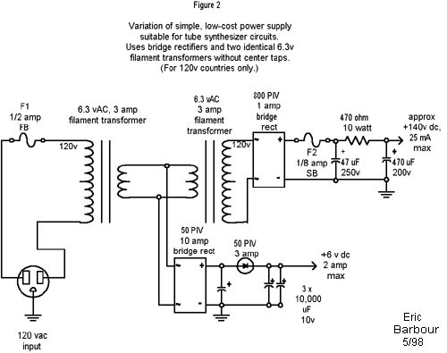

|
Owner, METASONIX, Redwood City, California USA e-mail: synth@metasonix.com Power Supplies for Tube Synthesizers One of the major counts against the use of tubes in audio equipment is the frequent objection to the need for a "high voltage" power supply for the plates. This seems to be more of an economic objection than anything else, given that the capacitors and other components for operation at voltages above 100v dc tend to be more costly than low-voltage components used with solid state technology. Also, many hobbyists seem to have some fear of such voltages due to the danger of electrocution. Personally, I've been working with "high" voltages for more than 20 years, and have yet to kill myself. In fact, dc is not the great danger that people often think. A jolt from a 150vdc supply can be painful and annoying, but is very unlikely to be fatal. (AC is another matter, although one is rarely exposed to it when building small-signal tube circuits.) Besides, I don't really consider 150v to qualify as "high" voltage. People who work in physics often speak of "high" voltage as being at least 10,000 volts. And there are now engineers who design portable electronics to work on one or two batteries - these people sometimes call 5.0vdc "high" voltage. So the appellation means very little. Let's call 150v a "moderate" voltage. As it happens, making a DC supply of 120-150v is relatively easy. And, it is just the right supply to properly run the tube synthesizer circuits shown in the previous articles. Not so low that the tubes are "current-starved" (one of those foolish things that some audio OEMs do with tubes nowadays), yet not so high as to cause problems with reliability. As it happens, the tube VCO's thyratron needs at least 100v regulated for proper operation, while such voltages are just the right level for operation of the small pentodes in our filters and VCAs. You do not need special transformers to make this voltage. Some people have dismissed tubes because they claim (wrongly) that the needed power supplies involve costly custom power transformers. Not true - one can easily make about 150v by connecting two common filament transformers back-to-back. Figure 1 shows the basic idea. This circuit uses a "universal" transformer available from Jameco Electronics (www.jameco.com). It has a center-tapped primary, which allows use with 120v or 240v mains power. And the center tap comes in handy on the second transformer, allowing the production of 150v dc with two low-cost rectifier diodes. The +6v is suitable for tube heaters (all of our tubes use 6.3v heater supplies - it need not be exactly 6.3v.) The extra diode in the heater supply drops the filtered dc voltage by about 0.5 volts and allows the output capacitor to further filter the dc. (Heater power need not be extremely clean - regulation is not really required.) All the components shown are inexpensive and easy to obtain. The 470 uF 200v filter capacitor is commonly used in the input side of switching power supplies, so it is easy to find in surplus. The plate power from this circuit is very clean - at full load there will be less than 20 mV AC riding on the +150v. This supply works fine on the 100vac mains available in Japan, as the resulting dc will be about 120v, adequate to run any of the tube synth circuits without any changes. Figure 2 is a more generic design, using a 6.3v transformer with a plain non-center-tapped primary. A 12.6v CT transformer, such as the Radio Shack 273-1511, can be used by going to the heater supply rectifier shown in Figure 1. It is a very good idea to build these circuits into sealed cabinets, to prevent accidental contact with the AC voltages. If they are used for breadboarding, the 150v dc may be made available on a binding post, provided that it is clearly labeled as a dangerous voltage. Schematics 
Below is a variation of Figure 1 that gives both + and - 150V. The pushbutton is to provide rapid discharging of the capacitors for times when you wish to work on the circuitry. If you replace the push button with the normally closed contacts of a relay powered from the heater supply, discharge would be automatic. Ken.
NOTE: readers are permitted to construct these circuits FOR THEIR OWN PERSONAL USE ONLY. Eric Barbour retains all rights to them. Any attempt to patent, copyright, trademark, or manufacture them for sale, without the express written permission of Eric Barbour, will result in legal action.
A note to readers: this circuitry is intended for the more advanced builder. Because high voltages are used, a shock hazard exists. We do NOT recommend that the novice DIY musician try to construct this synthesizer. Some experience with tube electronics is highly recommended. (Disclaimer:) All these projects and designs should be considered dangerous if not lethal if not used safely. When working on projects based on these designs, use extreme care to ensure that you do not come into contact with mains AC voltages or high voltage DC. If you are not confident about working with mains voltages, or high voltages, or you are not legally allowed to work with mains voltages, or high voltages, you are advised not to attempt work on them. The author, host, and all people associated with these web pages disclaim any liability for damages should anyone be killed or injured while working on these projects, or projects based on these designs, or any other project or design presented on these web pages and any associated web pages. The author, host, and all people associated with these web pages also disclaim any liability for projects, or projects based on these designs, or any other project or design presented on these web pages and any associated web pages when used in such a way as to infringe relevant government regulations and by-laws. Audio Synthesis via Vacuum Tubes Home
|
{kind=link}
{kind=link}